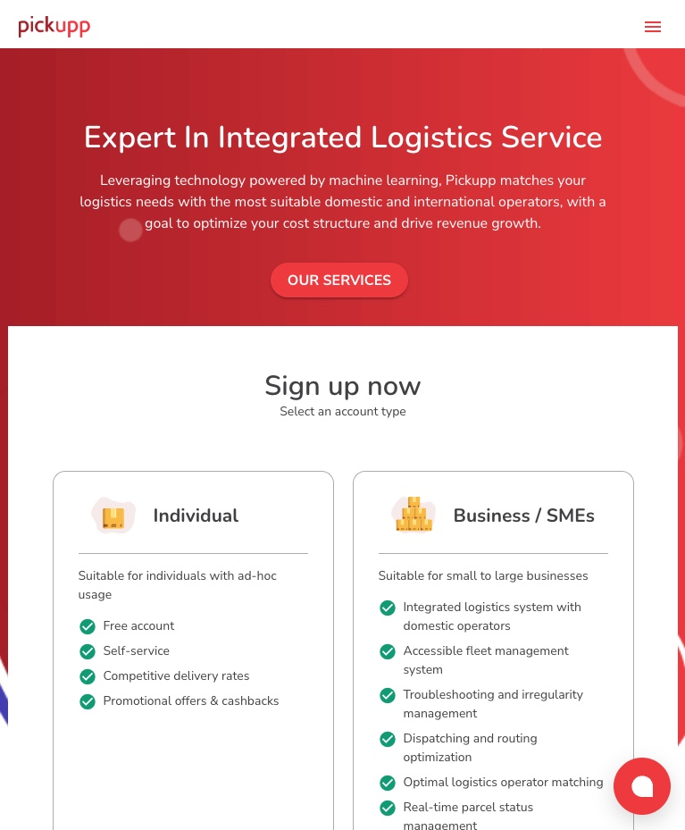

class: center, middle # Daniel Lin's Works --- ###### In a Hurry ### Key Highlights<br/> Here are the highlights that best showcase my experience: - [Work Experience @Pickupp (2021-2023)](./index.html#9) - 2 years of experience in sophisticated full-stack development, delivering solutions for diverse technical challenges. - [LZStock Project (2025)](./index.html#37) - Production-Ready Execution: Built a self-initiated system covering the full development lifecycle, from conceptual design to cloud deployment. - DDD Driven: Applied Domain-Driven Design (DDD) to establish clear bounded contexts and scalable domain logic. - Practical Mastery: Engineered a foundational framework to explore software best practices and gain hands-on experience with real-world technical hurdles. --- ###### Company List ### Company Full Name ##### @Pickupp for PICKUPP (Singapore, Hong Kong, Taiwan, Malaysia) Pickupp is a logistics company that redefines the industry with a data-driven approach, providing transparent and customer-centric services and technology to help businesses scale. ##### @PG for Positive Grid (Worldwide) Positive Grid is a music technology company that specializes in developing innovative digital amplifiers and effects software for guitarists and bassists, with well-known products like the Spark series smart amp. ##### @Blue for BlueWell Technology (Taiwan) BlueWell is a privately owned software and consultancy outsourcing company based in Taipei offering software development services to clients majorly in Asia since 2013  <img style="width:30%;vertical-align: top;" src="./statics/img/Blue/id.jpg" alt="blue_id"> --- ###### Skills ### Planning <br/> #### From Seneca - Database Design - Testing Project #### From Portfolios (Lazy-Stock-Screener or LZStock) - Domain-Driven Design (DDD) - Clean Architecture --- ###### Skills ### Front End<br/> Feature + Tech #### From Work Experience - (@Pickupp) Admin Order detail page <p class="tech">(React hooks)</p> - (@Pickupp) Feature toggle SDK <p class="tech">(React hooks)</p> - (@Pickupp) Websocket service client <p class="tech">(React hooks)</p> - (@PG) eCommence website for music technology company <p class="tech">(JS + SASS)</p> - (@Blue) Website as product <p class="tech">(JS + CSS)</p> #### From Portfolios - LZStock <p class="tech">(React + Jotai + TailwindCSS + RadixUI + TanStack)</p> - Price Dashboard <p class="tech">(React + Redux + SASS)</p> --- ###### Skills ### Back End<br/> Feature + Tech + Performance tuning #### From Work Experience (@Pickupp) - Websocket service <p class="tech">(Node.js)</p> - Feature Toggle SDK <p class="tech">(Node.js + Golang)</p> - Log library <p class="tech">(Node.js)</p> - New Backbone Order system and Migration <p class="tech">(Node.js + Golang)</p> - Performance tuning with SQL plan <p class="tech">(PostgreSQL + AWS Performance Insights)</p> #### From Portfolios - LZStock <p class="tech">(Golang + Gorm + gRPC)</p> - Price Dashboard <p class="tech">(Node.js + Mongoose)</p> - Email Sender <p class="tech">(Node.js + Mongoose)</p> --- ###### Skills ### DevOps<br/> #### From Work Experience (@Pickupp) - CI pipelines <p class="tech">(Bitbucket + CircleCI + AWS ECR)</p> - Deployment <p class="tech">(Docker + K8S + AWS EKS)</p> - Monitoring <p class="tech">(Grafana + Prometheus)</p> #### From Portfolios (LZStock) - CI pipelines <p class="tech">(Gitlab + CircleCI + Gitlab Container Registry)</p> - Deployment <p class="tech">(Docker + K8S + Google Cloud GKE)</p> --- ###### Skills ### Data<br/> Leverage ETL process #### Portfolios - Financial Data Pipeline <p class="tech">(Python + Pandas) --- ###### Work Experience @Pickupp (2021-2023) ### Summary<br/> Gained comprehensive full-stack development experience across diverse technical challenges over 2 years. --- ###### Work Experience @Pickupp (2021-2023) ### Professional Experience & Key Contributions<br/> - Architecture & Infrastructure (Tech part) - Built websocket service (2021-2022) - Built feature toggle SDK (2021-2022) - Built log library (2022-2023) - Built new unified outsource service (3PL Integration) (2021-2022) - Key Product Milestones (Feature part) - Built Backbone service with backward compatibility (2022-2023) - Built new order detail page (2022-2023) - Leadership & Team Impact - Collaborated with cross-functional stakeholders - Conducted bi-weekly functional demo - Mentored Junior and reviewed code - Estimated story point and contributed in a Scrum Sprint --- ###### Work Experience @Pickupp (2021-2023) ### Tech Part: Websocket Service - Decoupled Architecture - Engineered an independent Express-based WebSocket gateway - Integrated with NATS event streams - Connection Resource Management - Leveraged an ES6 Map for connection tracking, - Utilizing proactive 30s pingpong heartbeats and 'close' event listeners - Resilient React Client - Provided a custom client library with Hooks using Context/Provider and useCallback for reusing WebSocket instance with sessionToken as dependency. - Retry mechanism - Robust Security & Logic - Implemented token-based authentication - Implemented a declarative configuration for dynamic grouping, payload validation, and portal-specific data transformation. --- ###### Work Experience @Pickupp (2021-2023) ### Tech Part: Real-time Feature Toggle SDK <br/> A switch, enabling or disabling a feature instantly without needing a new deployment. - High-Performance Client SDKs: - Built libraries for React, Golang, and Node.js with local state resolution - Built a React SDK utilizing Context API and custom hooks for global state management. - Optimized payload by tag-based filtering (e.g., 'release', 'developing') to limit query scope. - Hybrid Sync Strategy: - Polling-first baseline for guaranteed eventual consistency. - Real-time enhancement via NATS JetStream and WebSockets. - Resilience: - Custom gRPC retry mechanism for Go and Node.js. --- ###### Work Experience @Pickupp (2021-2023) ### Tech Part: Outsource Service - Provider-Agnostic Infrastructure & Extension-Oriented Design - Architected a unified microservice to consolidate disparate 3PL partner integrations. - Standardized core actions (e.g., Update Trip Status, Quote Fee, Get Order) via a standardized controller. - Leveraged declarative configuration for common flows while opening for vendor-dependent logic (e.g., Create Order). - Hybrid Data Modeling (JSONB) - Standardized common logistics fields (status, order number) for optimized indexing. - Utilized JSONB storage for raw partner messages to ensure data fidelity and flexibility. - Status Synchronization Strategy & Event-Driven Order Chain - Combined Push (Webhooks) Pull (Polling) based updates on Partner - Designed a decoupled flow: Order → Outsource → 3PL Provider --- ###### Work Experience @Pickupp (2021-2023) ### Tech Part: Log Library - Asynchronous Context Tracking - Leveraged AsyncLocalStorage for non-intrusive metadata propagation - Aspect-Oriented Interception - Engineered a high-level function tracing library utilizing Proxy and Reflect without modifying business logic. <div style="text-align:center;"> </div> --- ###### Work Experience @Pickupp (2021-2023) ### Backbone Service: Strategic Transformation - Core of Event-Driven Architecture (EDA) - Decoupled "Old Order Service" into Backbone and Last-leg services; delegated dispatching and trip logic. - Refined scope: Focused on Order, Parcel, Waypoint, and Append-only Tracking Timeline. - System Hub: Leveraged durable messaging to synchronize Wallet, Warehouse, and Outsource modules. - Read-Oriented Service: Optimized for high-frequency queries (e.g., `getOrder`, `getOrders`). - Migration Strategy and Adapter Wrapper - Backward-compatible adapters to transform data between the input source and the backbone, and from the backbone into the legacy order system. - Zero-Downtime Migration --- ###### Work Experience @Pickupp (2021-2023) ### Backbone Service: Deep Dive in Technical Execution - High-Availability & Scale Engineering - Benefit of EDA - Query Optimization: Approaches we had and Lesson Learned - Zero-downtime Migration w/ Soft Launch Strategy - Engineering Retrospective (Technical Debt Management) - Order Status Retrieval (Fixed) - The Joins vs. Scale Trade-off (Fixed) - The EAV Model Trap (Fixed) - Distributed Transaction Resilience - Decoupling the "Fat Controller" --- ###### Work Experience @Pickupp (2021-2023) ### Backbone Service: Benefit of EDA<br/> - Elastic Scaling: Decoupled consumption allows downstream services (Wallet, Warehouse) to handle spikes via Load Leveling without stressing the Backbone. - Data Integrity & Traceability: Append-only event streams provide a naturally immutable audit trail for the entire order lifecycle, simplifying complex dispute resolutions. <div style="display:inline-block;"> <img style="width:39%;" src="./statics/img/Pickupp/order-metric-8-pods.jpg" alt="order_metric_8_pods"> <img style="width:60%;vertical-align: top;" src="./statics/img/Pickupp/orderStatusTimeline.jpg" alt="timeline"> </div> --- ###### Work Experience @Pickupp (2021-2023) ### Backbone Service: Query Optimization & Scalability<br> - Performance Engineering (Then) - Issue Identification: Utilized AWS Performance Insights to pinpoint high-latency SQL and analyzed execution plans for optimization. - Indexing Strategy: Optimized query by implementing targeted indexes - Load Distribution: Leveraged RDS Read Replicas (1 Main, 2 Replicas) - Strategic Evolution (Now) - Moving toward Denormalization and optimized schemas to reduce complex join overhead. - Evaluating Database Partitioning for long growing table like event sourcing table - Leveraging Sharding when single database won't work - Leveraging Redis for sub-millisecond hot-path queries and ElasticSearch for complex, multi-dimensional searches across millions of records. --- ###### Work Experience @Pickupp (2021-2023) ### Backbone Service: Index Optimization to Reduce AAS<br> <div style="text-align:center;"> </div> --- ###### Work Experience @Pickupp (2021-2023) ### Backbone Service: Zero-downtime Migration w/ Soft Launch Strategy<br/> - Four phases Migration - Phase 1: Dual-write; Read from Legacy (Baseline consistency check). - Phase 2: Write to New Service; Async-sync to Legacy; Read from Legacy. - Phase 3: Primary Write to New Service; Read from New Service. - Phase 4: Full Cutover & Legacy Deprecation. <div style="text-align:left;"> <img style="width:100%;" src="./statics/img/Pickupp/zeroDowntimeMigration.jpg" alt="migration"> </div> --- ###### Work Experience @Pickupp (2021-2023) ### Backbone Retrospective: Order Status Retrieval (Fixed) #### Initial Approach: Calculated order status on-the-fly As the event table grew to millions of rows, the `ORDER BY created_at DESC LIMIT 1` queries became extremely expensive, even with indexing. <div style="text-align:center;"> <img style="width:80%;" src="./statics/img/Pickupp/orderStatusTimeline.jpg" alt="timeline"> </div> #### Optimal Approach: Single State model The latest status is now applied and persisted to a dedicated field in the orders table. <div style="display:inline-block; "> <img style="width:48%;vertical-align: top;" src="./statics/img/Pickupp/orderStatusInOrder.jpg" alt="event_sourcing"> <img style="width:48%;" src="./statics/img/Pickupp/singleOrderStatus.jpg" alt="event_sourcing"> </div> --- ###### Work Experience @Pickupp (2021-2023) ### Backbone Retrospective: The Join vs. Growth Trade-off (Fixed) #### Initial Approach: Strict Normalization - Architecture: Data spread across 6 distinct tables to ensure strict ACID compliance. - Challenge: Fetching a single "Complete Order" required expensive 6-way joins, which became a bottleneck as the dataset matured. #### Optimal Approach: The Join/Growth Trade-Off - Stable Data (`<`10K rows): - Maintain Normalization; joins are acceptable for consistency and storage efficiency. - Fast-growing Data (Orders/History): - Shift to Denormalized Read Models. Implemented specialized read solutions (Materialized Views/JSONB caching) to flatten complex relationships. --- ###### Work Experience @Pickupp (2021-2023) ### Backbone Retrospective: The EAV Model Trap (Fixed) #### Initial Approach Implemented the EAV (Entity-Attribute-Value) model for secondary attributes to ensure maximum schema flexibility across different order types. #### Pain Points: The Reality - Integrity & Type Safety: Lost database-level constraints and data typing. - Performance Degradation: Massive vertical growth (10+ rows per order) led to table bloat and index inefficiency. - Application Complexity: Forced to perform data transformation and "array searching" logic in the code. #### Optimal Approach - Column-based approach for core fields. - Leveraged JSONB in PostgreSQL for semi-structured data, providing a balance between flexibility, GIN indexing, and data integrity. --- ###### Work Experience @Pickupp (2021-2023) ### Backbone Retrospective: Distributed Transaction Resilience #### Initial Approach Leveraged Nats JetStream (Raft-based) to ensure high-availability and persistent message delivery within the Event-driven architecture. #### The Unresolved Challenge While messages were persisted, handling downstream business failures (e.g., payment failure, inventory shortage) remained complex. #### Optimal Approach - Local Resilience: - Implemented Retry Queues and Dead Letter Queues (DLQ) to triage and recover from transient network/service failures. - Global Coordination: - Transitioning toward the Saga Pattern (Choreography-based) to manage compensating transactions for permanent business logic failures. --- ###### Work Experience @Pickupp (2021-2023) ### Backbone Retrospective: Decoupling the "Fat Controller"<br/> #### Initial Approach: The Monolithic Controller - Anti-pattern: A single controller handled gRPC communication, ORM mapping, business logic, and downstream service calls. - Pain Points: Highly coupled code, difficult to unit test, and high maintenance overhead for new features. #### Optimal Approach: Clean Architecture Implementation - Applied these principles in my LZStock (Golang) project. <div style="display:inline-block;text-align: center;"> <img style="width:80%;" src="./statics/img/LZStock/DDD Strategic Modeling - Clean Architecture-2.jpg" alt="clean_architecture"> </div> --- ###### Work Experience @Pickupp (2021-2023) ### Backbone Service UI: Admin Order Detail Page<br/> - Strategic Shift: Replaced the legacy Redux + Saga architecture with a native Context API / useReducer pattern. - Enhanced Scalability: Built a custom Hook-based architecture to encapsulate complex domain logic, ensuring the UI remains thin and reactive. <div style="text-align:center;"> <img style="width:50%;" src="./statics/img/Pickupp/newOrderDetailPage.jpg" alt="order_detail_page"> </div> --- ###### Work Experience @PG (2017-2019) ### Layout work <p>Build a brand new website for Positive Grid by a ecommerce solution called Bigcommerce that mainly focus on front-end.</p> ##### Header: <div style="display:inline-block;"> <video autoplay muted preload="auto" style="width:68%;"> <source type="video/mp4" src="./statics/img/PG/header.mp4"> </video> <video autoplay muted preload="auto" style="width:28%;"> <source type="video/mp4" src="./statics/img/PG/header-mobile.mp4"> </video> </div> --- ###### Work Experience @PG (2017-2019) ### Layout work ##### Demo Page: <div style="display:inline-block;"> <video autoplay muted preload="auto" style="width:78%;"> <source type="video/mp4" src="./statics/img/PG/demo-resize.mp4"> </video> <img style="width:78%;" src="./statics/img/PG/demo-fullpage.png" alt="demo-fullpage"> <img style="width:20%;vertical-align: top;" src="./statics/img/PG/demo-mobile.png" alt="demo-mobile"> </div> --- ###### Work Experience @PG (2017-2019) ### Layout work ##### Login Page: <img style="width:100%;" src="./statics/img/PG/login.png" alt="login"> --- ###### Work Experience @PG (2017-2019) ### Layout work ##### Find A Store / Store Page / Cart Mobile: <div style="display:inline-block;"> <img style="width:30%;" src="./statics/img/PG/find-store.png" alt="find-store"> <img style="width:33%;vertical-align: top;" src="./statics/img/PG/store1.jpg" alt="store1"> <div style="width:33%;vertical-align: top;display: inline-block;"> <!-- <img style="width:100%;" src="./statics/img/PG/cart.png" alt="cart"> --> <img style="width:100%;" src="./statics/img/PG/cart-mobile.png" alt="cart-mobile"> </div> </div> --- ###### Work Experience @PG (2017-2019) ### Product Card: <p> A code which is written in sub-pub pattern to match a maximum height value of individual product item in the same row. </p> <div style="display:inline-block;text-align: center;"> <img style="width:65%;" src="./statics/img/PG/product-card-old.png" alt="product-card-old"> <img style="width:65%;vertical-align: top;" src="./statics/img/PG/product-card.png" alt="product-card"> </div> --- ###### Work Experience @PG (2017-2019) ### Promotion Bar ##### Dynamic render: <p>A marketing team member can access BC (Bigcommerce)'s backend, edit essential text, and click save, allowing the promotion bar to update immediately without requiring additional deployment. This capability was not originally a feature in BC.</p> <div> <img style="width:100%;" src="./statics/img/PG/promotion-bar.png" alt="promotion-bar"> </div> --- ###### Work Experience @PG (2017-2019) ### Git Flow ##### Requirements: - Each new feature must be developed on its own dedicated branch. - Some completed features are deployed but remain dormant until approved by the Marketing team. - The priority is to update and deploy the website as quickly as possible. <img src="./statics/img/PG/customized-git-workflow.jpg" alt="git-flow"> --- ###### Work Experience @PG (2017-2019) ### Git Flow ##### Simplified Git Workflow for small project: - First step is always checkouting a new branch from master. - Merge feature branch into Prod. - Merge Production branch into Stage branch regularly, but don't merge stage branch into prod. branch. - Staging branch is only for testing purpose. <img src="./statics/img/PG/customized-git-workflow.jpg" alt="git-flow"> --- ###### Work Experience @PG (2017-2019) ### Bridged Page between APP and website: <p> In order to increase purchase, we had to find a way that our customers can access our web store easily inside app. </p> <video autoplay muted preload="auto" style="width:100%;"> <source type="video/mp4" src="./statics/img/PG/crm.mp4"> </video> --- ###### Work Experience @PG (2017-2019) ### Internal Price Dashboard <p>Marketing team needs a tool that can quickly read, set and update company's product price during every promotion era.</p> ##### Sketch this project: <div> <img style="width:100%;" src="./statics/img/PG/price-dashboard-mockup.png" alt="price-dashboard-mockup"> </div> --- ###### Work Experience @Blue (2016-2017) ### Daily front-end tasks <p>One project involves layout design and interactive development for a gaming-type website, covering sections like event pages, deposits and withdrawals, login/logout, game entry, sports news, and more.</p> #### Promotion system <p> Be assigned as a pioneer to manage the integration task for our latest system among other projects, handling both the front-end implementation and its integration with the back-end. </p> --- ###### LZStock (2025) [<a href="https://blog.lzstock.app/blog/introduction" target="_blank">blog</a>] ### Enterprise-Grade DDD Architecture: Introduction - Building Scalable Financial Systems with Domain-Driven Design (DDD) from strategic design to production-ready deployment - Mainly during April 2025 - August 2025 (~100 days) <div style="display:inline-block;text-align: center;width:100%;margin-top:10px;"> </div> --- ###### LZStock (2025) [<a href="https://blog.lzstock.app/blog/what-I-built" target="_blank">blog</a>] ### Enterprise-Grade DDD Architecture: Technical Achievements - **Strategic Domain Modeling**: Designed 15 bounded contexts with proper context mapping - **Tactical DDD with Golang**: Implemented Aggregates, Entities, Value Objects, and Repository patterns - **Microservices Architecture**: Built 6 (of 15) independent services communicating via gRPC and NATS messaging - **Production K8S Deployment**: Containerized services with Helm charts, CircleCI and GKE. - **Real Financial Application** (for now): - Stock screener with dashboard management, watchlist tracking - Autocomplete search with company ticker - Real-time price update (mocked source data) - User profile management --- ###### LZStock (2025) [<a href="https://blog.lzstock.app/blog/what-I-built" target="_blank">blog</a>] ### Develop Flow: DDD Core + Extended Architecture Layers - Business Analysis & Use Case Development (Pre-DDD) - Strategic Design (DDD Core) - Tactical Design (DDD Core) - Application Architecture (Beyond DDD) - Infrastructure Architecture (Beyond DDD) --- ###### LZStock (2025) [<a href="https://blog.lzstock.app/blog/what-I-built" target="_blank">blog</a>] ### Develop Flow: DDD Core + Extended Architecture Layers <div style="display:inline-block;text-align: center;"> <img style="width:90%;" src="./statics/img/LZStock/DDD Strategic Modeling - DDD Core + Extended Architecture Layers.jpg" alt="DDD_Core_+_Extended_Architecture_Layers"> </div> --- ###### LZStock (2025) [<a href="https://blog.lzstock.app/blog/what-I-built" target="_blank">blog</a>] ### Project Overview Time Flow -> | Requirements Analysis | DDD Strategic | DDD Tactical | Application | Infrastructure | |--|-------------|-----------|---------------------| | Use Case | System Context Diagram | Domain Object Design | Front-end Development | **Fault Tolerance** | | | Domain Model | **Domain Object Responsibility** | **Back-end Development** | **Networking and Protocols** | | | Bounded Context | Relationship between Domain Objects | **Database Design** | Cloud and DevOps | | | Context Mapping | | Security| **Monitoring and Observability** | --- ###### LZStock (2025) [<a href="https://blog.lzstock.app/blog/what-I-built" target="_blank">blog</a>] ### Requirements Analysis: Create Dashboard Use Case P1 <div style="display:inline-block;text-align: center;"> <img style="width:80%;" src="./statics/img/LZStock/CreateDashboardUseCaseP1.jpg" alt="create_dashboard_user_story_use_cases"> </div> --- ###### LZStock (2025) [<a href="https://blog.lzstock.app/blog/what-I-built" target="_blank">blog</a>] ### Requirements Analysis: Create Dashboard Use Case P2 <div style="display:inline-block;text-align: center;"> <img style="width:80%;" src="./statics/img/LZStock/CreateDashboardUseCaseP2.jpg" alt="create_dashboard_user_story_use_cases"> </div> --- ###### LZStock (2025) [<a href="https://blog.lzstock.app/blog/what-I-built" target="_blank">blog</a>] ### Strategic Design: System Context Diagram <div> <img style="width:100%;" src="./statics/img/LZStock/DDD Strategic Modeling - System Context Diagram.jpg" alt="system_context_diagram"> </div> --- ###### LZStock (2025) [<a href="https://blog.lzstock.app/blog/what-I-built" target="_blank">blog</a>] ### Strategic Design: How to Proceed? #### Start from Big Ball of Mud (Bottom-Up) - Big Ball of Mud -> Domain Model #### Start from Domain Model (Top-Down) - Form Domain Model Directly --- ###### LZStock (2025) [<a href="https://blog.lzstock.app/blog/what-I-built" target="_blank">blog</a>] ### Strategic Design (Bottom-Up): Big Ball of Mud <div> <img style="width:100%;" src="./statics/img/LZStock/Big Ball of Mud.jpg" alt="big_ball_of_mud"> </div> --- ###### LZStock (2025) [<a href="https://blog.lzstock.app/blog/what-I-built" target="_blank">blog</a>] ### Strategic Design (Bottom-Up): Bounded Contexts <div> <img style="width:100%;" src="./statics/img/LZStock/Bounded Contexts.jpg" alt="bounded_contexts"> </div> --- ###### LZStock (2025) [<a href="https://blog.lzstock.app/blog/what-I-built" target="_blank">blog</a>] ### Strategic Design (Bottom-Up): Context Mapping <div> <img style="width:100%;" src="./statics/img/LZStock/Context Mapping.jpg" alt="context_mapping"> </div> --- ###### LZStock (2025) [<a href="https://blog.lzstock.app/blog/what-I-built" target="_blank">blog</a>] ### Strategic Design (Top-Down): Domain Model <div style="display:inline-block;text-align: center;"> <img style="width:75%;" src="./statics/img/LZStock/DDD Strategic Modeling - Domain.jpg" alt="domain_and_sub_domain"> </div> --- ###### LZStock (2025) [<a href="https://blog.lzstock.app/blog/what-I-built" target="_blank">blog</a>] ### Strategic Design (Top-Down): Bounded Context and Context Mapping <div style="display:inline-block;text-align: center;"> <img style="width:75%;" src="./statics/img/LZStock/DDD Strategic Modeling - SubDomain to BC and Context Mapping.jpg" alt="sub_domain_to_bc_and_context_mapping"> </div> --- ###### LZStock (2025) [<a href="https://blog.lzstock.app/blog/what-I-built" target="_blank">blog</a>] ### Strategic Design (Top-Down): With Ubiquitous Language <div style="display:inline-block;text-align: center;"> <img style="width:75%;" src="./statics/img/LZStock/DDD Strategic Modeling - BC.jpg" alt="domain_and_sub_domain"> </div> --- ###### LZStock (2025) [<a href="https://blog.lzstock.app/blog/what-I-built" target="_blank">blog</a>] ### Strategic Design (Top-Down): Context Mapping Types | Abbreviation | Full Name | Communication Method | Purpose | |-------------|-----------|---------------------|---------| | **C/S** | Customer/Supplier | NATS | Direct dependency with supplier providing services | | **OHS with PL** | Open Host Service with Published Language | gRPC | Standardized API for multiple consumers | | **CL** | Conformist | gRPC | Customer adapts to supplier's model | | **ACL** | Anti-Corruption Layer | gRPC | Translation layer to protect domain model | --- ###### LZStock (2025) [<a href="https://blog.lzstock.app/blog/ddd/domain-object-design" target="_blank">blog</a>] ### Tactical Design: Domain Object Design <div style="text-align: center;"> <img style="width:100%;" src="./statics/img/LZStock/DDD Strategic Modeling - Domain Model Design.jpg" alt="domain_model_design"> </div> --- ###### LZStock (2025) [<a href="https://blog.lzstock.app/blog/ddd/domain-object-design" target="_blank">blog</a>] ### Tactical Design: Domain Object Scope Hielarithy <div style="text-align: center;"> <img style="width:100%;" src="./statics/img/LZStock/DDD Strategic Modeling - Domain Object.jpg" alt="domain_object"> </div> --- ###### LZStock (2025) [<a href="https://blog.lzstock.app/blog/ddd/domain-object-design" target="_blank">blog</a>] ### Tactical Design: Domain Object Validation Scopes and Responsibilities <div style="text-align: center;"> <img style="width:100%;" src="./statics/img/LZStock/DDD Strategic Modeling - Validation & Business Rules.jpg" alt="domain_model_design"> </div> --- ###### LZStock (2025) [<a href="https://blog.lzstock.app/blog/what-I-built" target="_blank">blog</a>] ### Application Architecture: Overview ##### Back-end development: | API Design | Use Cases & Controllers | Algorithm | Data Query | Concurrency | Error Handling | Testing |-------------|-----------|---------------------|-|-|-| | API Gateway Architecture | Clean Architecture | Autocomplete Search | Pagination Strategies | Session Manager | Error Chain | Testing Strategies | | Back-End with DDD and Clean Architecture | | N+1 Problem | | | | | | Trigger Methods | | | | | | | | Background Tasks | | | | | | | | Pagination Strategies | | | | | || ##### Database Design, Security and Front-end: | Database Design | Security | Front-end Design |-------------|-----------|-----------| |SQL Plan |CORS middleware|UI Design | |Index Type|Route-based access control|Front-End Architecture| --- ###### LZStock (2025) [<a href="https://blog.lzstock.app/blog/what-I-built" target="_blank">blog</a>] ### Application Architecture: UI Design <div> <img style="width:100%;" src="./statics/img/LZStock/New UI Design.jpg" alt="ui-design"> </div> --- ###### LZStock (2025) [<a href="https://blog.lzstock.app/blog/front-end-development/react-project" target="_blank">blog</a>] ### Application Architecture: Front End Structure <div style="display:inline-block;text-align: center;"> <img style="width:60%;" src="./statics/img/LZStock/DDD Strategic Modeling - Front End Flow.jpg" alt="front_end_flow"> </div> --- ###### LZStock (2025) [<a href="https://blog.lzstock.app/blog/networking-protocols/api-gateway" target="_blank">blog</a>] ### Application Architecture: API Gateway Architecture <div style="display:inline-block;text-align: center;"> <img style="width:60%;" src="./statics/img/LZStock/DDD Strategic Modeling - Gateway Flow.jpg" alt="back_end_flow_gateway"> </div> --- ###### LZStock (2025) [<a href="https://blog.lzstock.app/blog/networking-protocols/websocket" target="_blank">blog</a>] ### Application Architecture: Websocket Integration - Utilized the errgroup package to concurrently execute and coordinate multiple goroutines - Listened to gRPC stream closing, WebSocket client disconnection, and context cancellation --- ###### LZStock (2025) [<a href="https://blog.lzstock.app/blog/back-end-development/golang-project" target="_blank">blog</a>] ### Application Architecture: Clean Architecture - Layer and Duty Description <div style="display:inline-block;text-align: center;"> <img style="width:100%;" src="./statics/img/LZStock/DDD Strategic Modeling - Clean Architecture-2.jpg" alt="clean_architecture"> </div> --- ###### LZStock (2025) [<a href="https://blog.lzstock.app/blog/back-end-development/golang-project" target="_blank">blog</a>] ### Application Architecture: Back End with Clean Architecture <div> <img style="width:100%;" src="./statics/img/LZStock/DDD Strategic Modeling - Back End Flow-2.jpg" alt="back_end_flow"> </div> --- ###### LZStock (2025) [<a href="https://blog.lzstock.app/blog/back-end-development/triggers" target="_blank">blog</a>] ### Application Architecture: Trigger Methods ##### Invocation Rule of Thumb: - Controller: The single entry point for External or Traced Internal Events. - Usecase: Entry point for Untraced, Complex Logic (Event/Worker). - Repository: Entry point for Untraced, Simple CRUD (Event/Worker). <div style="display:inline-block;text-align: center;"> <img style="width:65%;" src="./statics/img/LZStock/DDD Strategic Modeling - Trigger Method-2.jpg" alt="back_end_flow_trigger_method"> </div> --- ###### LZStock (2025) [<a href="https://blog.lzstock.app/blog/back-end-development/background-tasks" target="_blank">blog</a>] ### Application Architecture: Background Tasks <div style="display:inline-block;text-align: center;"> <img style="width:80%;" src="./statics/img/LZStock/DDD Strategic Modeling - Worker Flow-2.jpg" alt="back_end_flow_background_task"> </div> --- ###### LZStock (2025) [<a href="https://blog.lzstock.app/blog/back-end-development/auto-complete-search-tree" target="_blank">blog</a>] ### Application Architecture: Autocomplete Search ###### Ternary Search Tree is an optimized TRIE Data Structure <div style="display:inline-block;text-align: center;"> <img style="width:70%;" src="https://iq.opengenus.org/content/images/2019/12/download--2--2.png" alt="autocomplete_search_tree"> </div> <a href="https://iq.opengenus.org/autocomplete-with-ternary-search-tree/" target="_blank">Ref: "Opengenus: autocomplete-with-ternary-search-tree"</a> --- ###### LZStock (2025) [<a href="https://blog.lzstock.app/blog/what-I-built" target="_blank">blog</a>] ### Application Architecture: Data Query - <a href="https://blog.lzstock.app/blog/database-design-opt/design-pagination-strategies" target="_blank">Pagination Strategies</a> - <a href="https://blog.lzstock.app/blog/back-end-development/prevent-n-1" target="_blank">Avoid N+1 Problem</a> --- ###### LZStock (2025) [<a href="https://blog.lzstock.app/blog/back-end-development/stateful-session-manager" target="_blank">blog</a>] ### Application Architecture: Thread-safe session management <div style="display:inline-block;text-align: center;"> <img style="width:70%;" src="./statics/img/LZStock/DDD Strategic Modeling - SessionManager.jpg" alt="thread_safe_session_management"> </div> <div style="display:inline-block;text-align: center;"> <img style="width:40%;" src="./statics/img/LZStock/DDD Strategic Modeling - Sequence Diagram.jpg" alt="session_management_sequence_diagram"> </div> --- ###### LZStock (2025) [<a href="https://blog.lzstock.app/blog/back-end-development/error-handling" target="_blank">blog</a>] ### Application Architecture: Error Chain <div style="display:inline-block;text-align: center;"> <img style="width:100%;" src="./statics/img/LZStock/DDD Strategic Modeling - Error Chain.jpg" alt="back_end_flow_error_chain"> </div> --- ###### LZStock (2025) [<a href="https://blog.lzstock.app/blog/testing-strategies/test" target="_blank">blog</a>] ### Application Architecture: Testing Focus <div style="display:inline-block;text-align: center;"> <img style="width:80%;" src="./statics/img/LZStock/DDD Strategic Modeling - Testing Focus-2.jpg" alt="back_end_flow_testing_focus"> </div> --- ###### LZStock (2025) [<a href="https://blog.lzstock.app/blog/what-I-built" target="_blank">blog</a>] ### Application Architecture: Database Optimization - <a href="https://blog.lzstock.app/blog/database-design-opt/sql-plan-trigger-index" target="_blank">Leveraging SQL Execution Plans for Query Tuning</a> - <a href="https://blog.lzstock.app/blog/database-design-opt/index-types" target="_blank">Indexing Exploration</a> --- ###### LZStock (2025) [<a href="https://blog.lzstock.app/blog/what-I-built" target="_blank">blog</a>] ### Application Architecture: Security - <a href="https://blog.lzstock.app/blog/security/cors" target="_blank">A CORS middleware</a> - <a href="https://blog.lzstock.app/blog/security/route-based-access-control" target="_blank">An authentication middleware</a> --- ###### LZStock (2025) [<a href="https://blog.lzstock.app/blog/what-I-built" target="_blank">blog</a>] ### Infrastructure Architecture: Overview | Fault Tolerance | High Availability and Scalability | Networking and Protocols | Cloud and DevOps | Monitoring and Observability | |-------------|----------|-----------|---------------------|-| | **Retry Strategies** | Synchronous Communication| Service Communication | **Cloud Deployment Workflow** | Logging | | **Service Registry** | Stateful Service Scaling | Async Communication | CI/CD Automation | **Health Check and Liveness Probe** | --- ###### LZStock (2025) [<a href="https://blog.lzstock.app/blog/what-I-built" target="_blank">blog</a>] ### Infrastructure Architecture: Fault Tolerance - <a href="https://blog.lzstock.app/blog/system-design/retry-strategy" target="_blank">Retry Strategy</a> - <a href="https://blog.lzstock.app/blog/system-design/service-registry" target="_blank">Service Registry</a> <div style="display:inline-block;text-align: center;"> <img style="width: 60%;" src="./statics/img/LZStock/DDD Strategic Modeling - Service Registry.jpg" alt="infrastructure_service_registry"> </div> --- ###### LZStock (2025) [<a href="https://blog.lzstock.app/blog/what-I-built" target="_blank">blog</a>] ### Infrastructure Architecture: High Availability and Scalability #### [Stateless Service Scaling](https://blog.lzstock.app/blog/cloud-devops/stateless-service-hz-vc-scaling) <div style="display:inline-block;text-align: center;"> <img style="width:70%;" src="./statics/img/LZStock/K8S Pod.jpg" alt="infrastructure_k8s_cluster"> </div> #### Stateful Service Scaling - Postgre: Leveraged Cloud SQL on GCP - self-hosted Redis(TODO): Redis Cluster - Self-host Nats: Cluster mode already --- ###### LZStock (2025) [<a href="https://blog.lzstock.app/blog/what-I-built" target="_blank">blog</a>] ### Infrastructure Architecture: Service Communication <div style="display:inline-block;text-align: center;"> <img style="width:80%;" src="./statics/img/LZStock/DDD Strategic Modeling - Services Communication.jpg" alt="infrastructure_service_communication"> </div> --- ###### LZStock (2025) [<a href="https://blog.lzstock.app/blog/what-I-built" target="_blank">blog</a>] ### Infrastructure Architecture: Async Communication <div style="display:inline-block;text-align: center;"> <img style="width:100%;" src="./statics/img/LZStock/DDD Strategic Modeling - Event Streaming-2.jpg" alt="infrastructure_event_streaming"> </div> --- ###### LZStock (2025) [<a href="https://blog.lzstock.app/blog/what-I-built" target="_blank">blog</a>] ### Infrastructure Architecture: Cloud and DevOps - <a href="https://blog.lzstock.app/blog/cloud-devops/cloud-deployment-workflow" target="_blank">Cloud Deployment Workflow</a> --- ###### LZStock (2025) [<a href="https://blog.lzstock.app/blog/what-I-built" target="_blank">blog</a>] ### Infrastructure Architecture: Health Check and Liveness Probe - <a href="https://blog.lzstock.app/blog/monitoring-obs/health-check-liveness" target="_blank">Liveness server with health check</a> --- ###### LZStock (2025) [<a href="https://blog.lzstock.app/blog/what-I-built" target="_blank">blog</a>] ### Infrastructure Architecture: Complete Architecture <div style="display:inline-block;text-align: center;"> <img style="width:88%;" src="./statics/img/LZStock/DDD Strategic Modeling - Complete Deployment.jpg" alt="infrastructure_complete_deployment"> </div> --- ###### LZStock (2025) [<a href="https://blog.lzstock.app/blog/what-I-built" target="_blank">blog</a>] ### Infrastructure Architecture: DB Deployment and Connection <div style="display:inline-block;text-align: center;"> <img style="width:100%;" src="./statics/img/LZStock/K8S DB deployment.jpg" alt="infrastructure_k8s_db_deployment"> </div> --- ###### LZStock (2025) [<a href="https://blog.lzstock.app/blog/what-I-built" target="_blank">blog</a>] ### Infrastructure Architecture: Module Deployment <div style="display:inline-block;text-align: center;"> <img style="width:110%;" src="./statics/img/LZStock/K8S module deployment.jpg" alt="infrastructure_k8s_module_deployment"> </div> --- ###### LZStock (2025) [<a href="https://blog.lzstock.app/blog/what-I-built" target="_blank">blog</a>] #### First Stage Demo: Auto Signin After Signup <div style="display:inline-block; text-align: center;"> <video autoplay loop muted preload="auto" style="width:100%;"> <source type="video/mp4" src="./statics/img/LZStock/Demo Auto Signin After Signup.mp4"> Your browser does not support the video tag. </video> </div> --- ###### LZStock (2025) [<a href="https://blog.lzstock.app/blog/what-I-built" target="_blank">blog</a>] #### First Stage Demo: Create Dashboard and Watchlist <div style="display:inline-block; text-align: center;"> <video autoplay loop muted preload="auto" style="width:100%;"> <source type="video/mp4" src="./statics/img/LZStock/Demo Create Dashboard and Watchlist.mp4"> Your browser does not support the video tag. </video> </div> --- ###### LZStock (2025) [<a href="https://blog.lzstock.app/blog/what-I-built" target="_blank">blog</a>] #### First Stage Demo: Add Company into Watchlist <div style="display:inline-block; text-align: center;"> <video autoplay loop muted preload="auto" style="width:100%;"> <source type="video/mp4" src="./statics/img/LZStock/Demo Add Company with Two Methods.mp4"> Your browser does not support the video tag. </video> </div> --- ###### LZStock (2025) [<a href="https://blog.lzstock.app/blog/what-I-built" target="_blank">blog</a>] #### First Stage Demo: CreateMultiple Watchlists <div style="display:inline-block; text-align: center;"> <video autoplay loop muted preload="auto" style="width:100%;"> <source type="video/mp4" src="./statics/img/LZStock/Demo Multiple Watchlists.mp4"> Your browser does not support the video tag. </video> </div> --- ###### LZStock (2025) [<a href="https://blog.lzstock.app/blog/what-I-built" target="_blank">blog</a>] #### First Stage Demo: Autocomplete Search <div style="display:inline-block; text-align: center;"> <video autoplay loop muted preload="auto" style="width:100%;"> <source type="video/mp4" src="./statics/img/LZStock/Demo Autocomplete.mp4"> Your browser does not support the video tag. </video> </div> --- ###### LZStock (2025) [<a href="https://blog.lzstock.app/blog/what-I-built" target="_blank">blog</a>] #### First Stage Demo: Update User Profile <div style="display:inline-block; text-align: center;"> <video autoplay loop muted preload="auto" style="width:100%;"> <source type="video/mp4" src="./statics/img/LZStock/Demo Update User Profile.mp4"> Your browser does not support the video tag. </video> </div> --- ###### LZStock (2025) [<a href="https://blog.lzstock.app/blog/what-I-built" target="_blank">blog</a>] #### First Stage Demo: Logout and Signin Again <div style="display:inline-block; text-align: center;"> <video autoplay loop muted preload="auto" style="width:100%;"> <source type="video/mp4" src="./statics/img/LZStock/Demo Logout and Signin Again.mp4"> Your browser does not support the video tag. </video> </div> --- ###### Financial Data Pipeline (2020) [[source]](https://github.com/DanielLin9406/worker-financialReportScreenr) ### Company Screener - Extensive Application of Design Patterns - Separation of Concerns (SoC) - High Extensibility <div style="display:inline-block;text-align: center;"> <img style="width:70%;" src="./statics/img/RPipelines/report.png" alt="financial-report-dump"> <img style="width:70%;" src="./statics/img/RPipelines/indicator.png" alt="financial-indicator-dump"> </div> --- ###### Price Dashboard (2020) [[source]](https://github.com/DanielLin9406/fullstack-priceDashboard) ### Project Overview An internal SPA for the purpose of setting and reading prices in terms of each product in the online shop. #### Features - Supported with create/read/update/delete operation for promotions. - Supported auto sign in with Google OAuth 2.0. - Visual dashboard for marketing team to manage promotions. #### What have I learned? (2025 Revision) - Should sync with existing product, and leveraging import instead of manually input each campaign - Redis is overkill here - Should leverage gRPC/tRPC instead of REST for internal communication --- ###### Price Dashboard (2020) [[source]](https://github.com/DanielLin9406/fullstack-priceDashboard) ### Demo UI: Part 1 <p>This is my first one full-stack project</p> <div> <img style="width:100%;" src="./statics/img/Price-Dashboard/price-dashboard-preview-1.png" alt="price-dashboard-preview-1"> </div> --- ###### Price Dashboard (2020) [[source]](https://github.com/DanielLin9406/fullstack-priceDashboard) ### Demo UI: Part 2 <div> <img style="width:100%;" src="./statics/img/Price-Dashboard/price-dashboard-preview-2.png" alt="price-dashboard-preview-2"> </div> --- ###### Price Dashboard (2020) [[source]](https://github.com/DanielLin9406/fullstack-priceDashboard) ### Demo #### Auto sign in <video autoplay muted preload="auto" style="width:100%;"> <source type="video/mp4" src="./statics/img/Price-Dashboard/auto-sign-in.mp4"> </video> --- ###### Price Dashboard (2020) [[source]](https://github.com/DanielLin9406/fullstack-priceDashboard) ### Demo #### Create a promotion <video autoplay loop muted preload="auto" style="width:100%;"> <source type="video/mp4" src="./statics/img/Price-Dashboard/create-promotion.mp4"> </video> --- ###### Price Dashboard (2020) [[source]](https://github.com/DanielLin9406/fullstack-priceDashboard) ### Demo #### Update a promotion <video autoplay loop muted preload="auto" style="width:100%;"> <source type="video/mp4" src="./statics/img/Price-Dashboard/update-promotion.mp4"> </video> --- ###### Price Dashboard (2020) [[source]](https://github.com/DanielLin9406/fullstack-priceDashboard) ### Demo #### Remove a promotion <video autoplay loop muted preload="auto" style="width:100%;"> <source type="video/mp4" src="./statics/img/Price-Dashboard/remove-promotion.mp4"> </video> --- ###### Price Dashboard (2020) [[source]](https://github.com/DanielLin9406/fullstack-priceDashboard) ### Demo #### Create a promotion and push it on live <video autoplay loop muted preload="auto" style="width:100%;"> <source type="video/mp4" src="./statics/img/Price-Dashboard/create-promotion-go-live.mp4"> </video> --- ###### Price Dashboard (2020) [[source]](https://github.com/DanielLin9406/fullstack-priceDashboard) ### Demo #### Create a promotion and push it on live while there is another promotion on live <video autoplay loop muted preload="auto" style="width:100%;"> <source type="video/mp4" src="./statics/img/Price-Dashboard/create-promotion-go-live-replace.mp4"> </video> --- ###### Price Dashboard (2020) [[source]](https://github.com/DanielLin9406/fullstack-priceDashboard) ### Demo #### Price updated when different products in bundles <video autoplay loop muted preload="auto" style="width:100%;"> <source type="video/mp4" src="./statics/img/Price-Dashboard/price-update-in-bundle.mp4"> </video> --- ###### Price Dashboard (2020) [[source]](https://github.com/DanielLin9406/fullstack-priceDashboard) ### Tech #### Front End (Web service) ##### Structure - Take advantage of the power of Webpack for packaging web service in dev and prod. environment instead of directly using CRA. - React-Redux best practice (e.g. layout, route and page as component for more flexibility.) - Separate Redux's mapStateToProps and mapDispatchToProps from every component in order to make it easy to understand. ##### Web Server - Use nginx as static file server in production environment. - JSON-server for serving a mock data. --- ###### Price Dashboard (2020) [[source]](https://github.com/DanielLin9406/fullstack-priceDashboard) ### Tech #### Back End (User / Promotions / Prices / Upgrade-rules Services) ##### Auth: - Google OAuth 2.0 ##### Structure: - Best practice of Node/Express with ES6 syntax(e.g. self-contained components as file structure, bind API at router level). - Every route has implemented Redis as cache server to reduce DB's query operation. ##### Cache: - Thanks to Redis, no extra DB query command is executed when post/update/delete router has been called and still can return a full list of promotion. ##### Proxy: - Use NGINX as a reverse proxy. --- ###### Price Dashboard (2020) [[source]](https://github.com/DanielLin9406/fullstack-priceDashboard) ### Tech #### DevOps ##### Container - Use Docker-compose to run dev on local - Multi-container structure - Use $(git rev-parse HEAD) to tag container in order to track version. - K8S ##### CI: - Travis ##### Cloud: - AWS ECS - GCP GKE --- ###### Price Dashboard (2020) [[source]](https://github.com/DanielLin9406/fullstack-priceDashboard) ### Developing Process #### Step 1: Business Requirement <br/> Gather requirements from team leader. --- ###### Price Dashboard (2020) [[source]](https://github.com/DanielLin9406/fullstack-priceDashboard) ### Developing Process #### Step 2: Build UI - Present at least twice your sketch and features to team leader in order to prevent misunderstandings: <div> <img style="width:80%;" src="./statics/img/PG/price-dashboard-mockup.png" alt="price-dashboard-mockup"> </div> --- ###### Price Dashboard (2020) [[source]](https://github.com/DanielLin9406/fullstack-priceDashboard) ### Developing Process #### Step 2: Build Data Structure: - According to sketch, build a redux data structure <div> <img style="width:50%;vertical-align: top;" src="./statics/img/Price-Dashboard/redux-structure-2.png" alt="redux-structure-2"> <img style="width:30%;vertical-align: top;" src="./statics/img/Price-Dashboard/redux-structure-1.png" alt="redux-structure-1"> </div> --- ###### Price Dashboard (2020) [[source]](https://github.com/DanielLin9406/fullstack-priceDashboard) ### Developing Process #### Step 2: Planning Sequence Diagrams <p style="font-size: 1rem;"> - Check existing API and define new API spec. </p> <p style="font-size: 1rem;"> - Define a API response's data structure. </p> <p style="font-size: 1rem;"> - Deal with Authorization. </p> <div> <img style="width:80%;" src="./statics/img/Price-Dashboard/sequence-diagram.png" alt="sequence-diagram"> </div> --- ###### Price Dashboard (2020) [[source]](https://github.com/DanielLin9406/fullstack-priceDashboard) ### Developing Process #### Step 3: Implement entry point: - Back-end API <p style="margin-top:0;margin-bottom:0.2rem;"> -> database </p> <p style="margin-top:0;margin-bottom:0.2rem;"> -> front-end </p> <br /> - Front-end with mock data server --- ###### Price Dashboard (2020) [[source]](https://github.com/DanielLin9406/fullstack-priceDashboard) ### Developing Process #### Step 3: Develop back end API: Although complexity of individual API may be different from case to case, I take an API as unit. <p style="margin-top:0;margin-bottom:0.2rem;"> - Build API router based on sequence diagram (Write schema and resolve to create graphql-server) </p> <p style="margin-top:0"> - Build a mock data and return response. </p> <p style="margin-top:0"> - Integrate 3rd API if needed. </p> --- ###### Price Dashboard (2020) [[source]](https://github.com/DanielLin9406/fullstack-priceDashboard) ### Developing Process #### Step 3: Connect backEnd API to DB: <p> - Setup DB </p> <p style="margin-top:0"> - Connect to dev/prod DB </p> <p style="margin-top:0"> - Build model classes </p> <p style="margin-top:0"> - Write seed data into DB </p> <p style="margin-top:0"> - Access data @API level and replace mock data </p> <p style="margin-top:0"> - Run unit test to api </p> --- ###### Price Dashboard (2020) [[source]](https://github.com/DanielLin9406/fullstack-priceDashboard) ### Developing Process #### Step 3: Develop front end data model <p> - Build Webpack </p> <p style="margin-top:0"> - Build Redux Store to host state </p> <p style="margin-top:0"> - Build Reducer and Set initial state </p> <p style="margin-top:0"> - Build Action and connect to backend API(or Mock data) </p> <p style="margin-top:0"> - Display data in component </p> --- ###### Price Dashboard (2020) [[source]](https://github.com/DanielLin9406/fullstack-priceDashboard) ### Developing Process #### Step 3: Develop front end UI from the bottom up <p> - Build unit component Button, Progress </p> <p style="margin-top:0"> - Define Props Parameter </p> <p style="margin-top:0"> - Decide where to call redux dispatch function </p> <p style="margin-top:0"> - Based on design pattern to write component </p> <p style="margin-top:0"> - Build a functional component </p> <p style="margin-top:0"> - Start to build state inside component </p> <p style="margin-top:0"> - Run unit test </p> --- ###### Price Dashboard (2020) [[source]](https://github.com/DanielLin9406/fullstack-priceDashboard) ### Developing Process #### Step 3: Dockerize your application <p> - Build dockerfile in dev and prod </p> <p style="margin-top:0"> - Build docker-compose in dev and prod </p> --- ###### Price Dashboard (2020) [[source]](https://github.com/DanielLin9406/fullstack-priceDashboard) ### Developing Process #### Step 4: Functional Test Phase <p> - E.g. test login, test post article </p> --- ###### Price Dashboard (2020) [[source]](https://github.com/DanielLin9406/fullstack-priceDashboard) ### Developing Process #### Step 5: Deployment Phase <p> - Set up CI tools </p> <p> - Run Integration Test </p> --- ###### Email Sender (2019) [[source]](https://github.com/DanielLin9406/fullstack-emailSender-upgraded) ### First full stack attempts [Email Sender by Stepher Grinder](https://github.com/StephenGrider/FullstackReactCode) <div> <img style="width:100%;" src="./statics/img/Email-Sender/preview.png" alt="email-sender-preview"> </div> --- ###### Email Sender (2019) [[source]](https://github.com/DanielLin9406/fullstack-emailSender-upgraded) ### Refractor Front End<br/> | | Original | Revised | |-----------------------------|------------------:|--------------------:| | Scaffold | Create React APP | My own Webpack | | Redux pattern | Reducer Pattern | Module Pattern | | New React feature | X | Hooks | | Websocket | X | socket.io | | Webpack dev/prod | X | yes | | Sign out | Page Reload | Ajax | | Dev. server | webpack-dev-server | webpack-dev-server | | Static file server in prod. | X | Express | --- ###### Email Sender (2019) [[source]](https://github.com/DanielLin9406/fullstack-emailSender-upgraded) ### Refractor Back End<br/> | | Original | Revised | |-----------------------------|--------------------|--------------------| | Node syntax | Common.js | import | | Separate ‘server’ and ‘app’ module | X | yes | | Router attaching level | App level | Router level | | Structure | Technical role | Self-contained components | | Graphql server | X | Both apollo-server and graphqlExpress | | Mocha + Chi Testing | Restful API | GraphQL API | | Websocket | X | socket.io | | API + Connection type | Restful | Restful+Graphql+Websocket | --- ###### Email Sender (2019) [[source]](https://github.com/DanielLin9406/fullstack-emailSender-upgraded) ### DevOps and CI <br/> | | Original | Revised | |----------------------|--------------------|--------------------| | Container | X | Docker, docker-compose | | CI/CD | heroku | travis | | Nginx | X | As reverse-proxy | --- ###### Personal Website (2019)[[source]](https://github.com/DanielLin9406/frontend-mixDanStudio) ### Introduction<br/> #### With modern packing tool, webpack. <div> <img style="width: 100%;" src="./statics/img/Persional-Website/preview.jpg" alt="preview of my personal website"> </div> --- ###### Personal Website (2019)[[source]](https://github.com/DanielLin9406/frontend-mixDanStudio) ### Front-End<br/> ##### Multi pug template<br/> <img style="width:100%;" src="./statics/img/Persional-Website/multi-pug.png" alt="multi-pug-template"> --- ###### Personal Website (2019)[[source]](https://github.com/DanielLin9406/frontend-mixDanStudio) ### Front-End<br/> ##### Dynamic import <img style="width:100%;" src="./statics/img/Persional-Website/webpack-dynamic-import.png" alt="webpack-dynamic-import"> --- ###### Personal Website (2019)[[source]](https://github.com/DanielLin9406/frontend-mixDanStudio) ### Front-End<br/> ##### Webpack plugin: <div style="text-align: center;"> <img style="width:70%;" src="./statics/img/Persional-Website/webpack-plugin.png" alt="webpack-plugin"> </div> --- ###### Personal Website (2019)[[source]](https://github.com/DanielLin9406/frontend-mixDanStudio) ### Front-End<br/> <span style="font-size:1rem;">Please ignore a awful color which is way much deviated from the original one.</span> ##### Layout and animations <video autoplay muted preload="auto" style="width:100%;"> <source type="video/mp4" src="./statics/img/Persional-Website/layout-animations.mp4"> Your browser does not support the video tag. </video> --- ###### Personal Website (2019)[[source]](https://github.com/DanielLin9406/frontend-mixDanStudio) ### Back-End<br/> Use API keys and OAuth2.0 to authorized user. ##### Google Sheet API <video autoplay muted preload="auto" style="width:100%;"> <source type="video/mp4" src="./statics/img/Persional-Website/google-spread-sheet-api.mp4"> Your browser does not support the video tag. </video> --- ###### VoiceTube Crawler (2019) [[source]](https://github.com/DanielLin9406/crawler-python-voicetube) ### Introduction ####From web html to .csv file A simple python crawler transfer a given HTML file into a .csv file. <div> <img style="width:48%;vertical-align: middle;" src="./statics/img/Crawler/from.png" alt="from.png"> <img style="width:48%;vertical-align: middle;" src="./statics/img/Crawler/Dist.png" alt="Dist.png"> </div> <br/> #### Tech Details <p style="margin-top:0;;margin-bottom:0.2rem;"> - Python 3 </p> <p style="margin-top:0;;margin-bottom:0.2rem;"> - Requests </p> <p style="margin-top:0;;margin-bottom:0.2rem;"> - BS4 </p> <p style="margin-top:0;"> - csv </p> --- ###### VoiceTube Crawler (2019) [[source]](https://github.com/DanielLin9406/crawler-python-voicetube) ### Refractor python code to a well-organized structure: <div> <img style="width:48%;" src="./statics/img/Crawler/python-before.png" alt="python-before.png"> <img style="width:48%;vertical-align: top;" src="./statics/img/Crawler/python-after.png" alt="python-after.png"> </div> --- <div style="display: flex;justify-content: center;align-items: center;height: 100%;"> <h2 style="text-align: center;">Thank you!!!!!!</h2> </div>